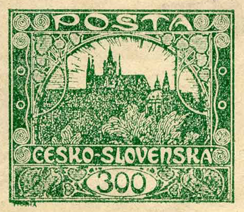
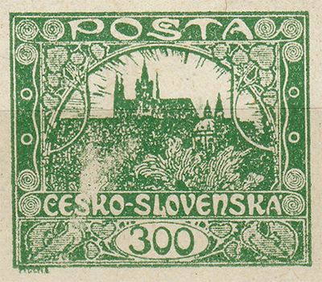
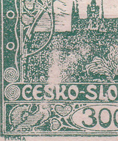
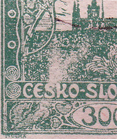
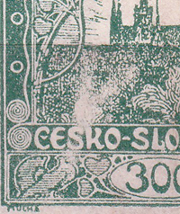
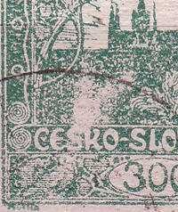
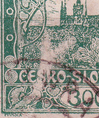

Mancha blanca en 97/1 del valor de 300h
Uno de los velos más conocidos de la emisión Hradčany es el velo de la posición 97 de la primera y única plancha de impresión del valor de 300h (POFIS n.º 23). Se trata de la llamada «horquilla», que va desde la paloma izquierda hacia el espacio situado bajo la catedral de San Vito.
Merece atención también un defecto de plancha que la primera Monografía no recoge, en la letra «L» de la palabra «Slovenská» – la letra L está unida por una mancha blanca al marco que hay debajo.


Evolución de este defecto de fabricación:




